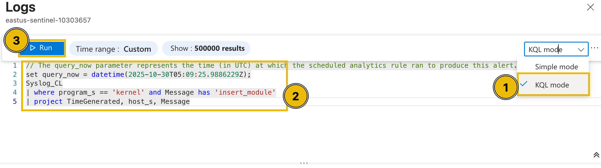
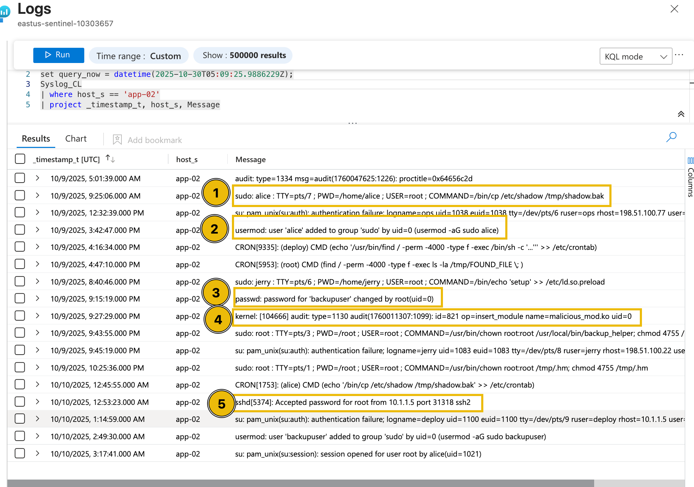

With the initial triage complete, McSkidy now examines the raw evidence behind these alerts. The next task involves diving into the underlying log data within Microsoft Sentinel to validate the alerts and uncover the exact attacker actions that triggered them. By analysing authentication attempts, command executions, and system changes, McSkidy can begin piecing together the full story of how the attack unfolded.
If we go back to the alert's full details view, we can try clicking the Events from the Evidence section.
From this view, we can definitely see the actual name of the kernel module installed in each machine and the time it was installed.
Diving deeper into this, we can try checking the raw events from a single host through a custom query. To do this, let's change the view into an editable KQL query and find all the events triggered from app-02.
set query_now = datetime(2025-10-30T05:09:25.9886229Z);
Syslog_CL
| where host_s == 'app-02'
| project _timestamp_t, host_s, Message

After executing the query, it can be seen that multiple potentially suspicious events occurred around the installation of the kernel module.
cp (copy) command to create a shadow file backup.
Based on the surrounding events, including the execution of the cp command to create a shadow file backup, the addition of the user account Alice to the sudoers group, the modification of the backupuser account by root, and the successful SSH authentication by the root user, this activity appears highly unusual. The sequence suggests potential privilege escalation and persistence behaviour, indicating that the event may not be part of normal system operations and warrants further investigation.
Now that we have discussed the methodology for determining and reviewing alerts, let’s help McSkidy complete the assessment by examining the remaining alerts and answering the questions below.